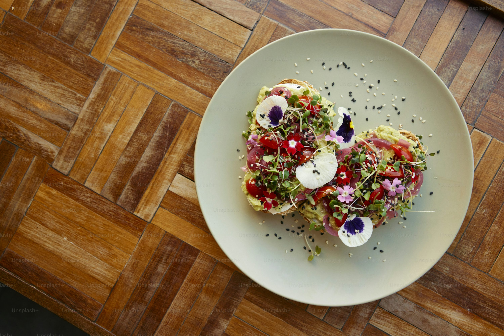

En Next F, creemos que la comida es más que un simple acto de nutrición. Es un viaje sensorial, una celebración
de los sabores y una conexión con la tradición culinaria.
Nuestro equipo de chefs apasionados trabaja con los ingredientes más frescos y locales para crear platos innovadores
que deleitarán tu paladar. Desde nuestras raíces hasta las últimas tendencias gastronómicas, cada bocado en Next F
es una experiencia única.
Elegancia en cada detalle
Desde la presentación de los platos hasta el ambiente sofisticado de nuestro restaurante,
cada elemento ha sido cuidadosamente seleccionado para crear una atmósfera de lujo y distinción.
Sabores exquisitos
Nuestras creaciones culinarias son una fusión perfecta de técnicas culinarias tradicionales
y toques de vanguardia, resultando en sabores complejos y memorables que satisfarán incluso a los paladares
más exigentes.

Ingredientes de primera calidad
Utilizamos únicamente los mejores ingredientes, muchos de ellos de origen local y
estacional, para garantizar la máxima frescura y calidad en cada plato.
Desde 2004, Next F ha sido un referente en la escena gastronómica de Colombia. Nuestra pasión por la
buena comida y nuestra búsqueda constante de la perfección nos han llevado a evolucionar y adaptarnos a
las nuevas tendencias culinarias, sin perder de vista nuestras raíces.
Hoy en día, seguimos siendo fieles a nuestros principios: ofrecer una experiencia gastronómica única, basada
en ingredientes frescos y de alta calidad, y un servicio excepcional.
En Next F, creemos que la comida es una experiencia que se disfruta con todos los sentidos. Te
invitamos a descubrir un nuevo nivel de sofisticación culinaria y a dejarte seducir por nuestros sabores
únicos.